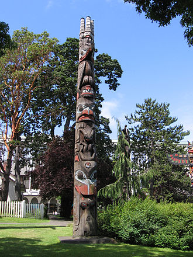

wikipedia https://en.wikipedia.org/wiki/File:Totem_haida.jpg
Totem Pole is created by First Nations which present commemorate ancestry, histical people and events.
Totem Pole has several type for Pole types,Carving a pole and Cultural styles.Its height is mostly 3-18 metters.
The History is over 200 years.